Over the past two years, grocery retailers responded by becoming more efficient, resilient, and innovative. They will be tested in 2022 by a number of new challenges, from increased inflation and the enduring rise of e-commerce to evolving consumer preferences. This report highlights new insights and perspectives that will help grocery retailers navigate these market headwinds.
State of Grocery Europe 2022
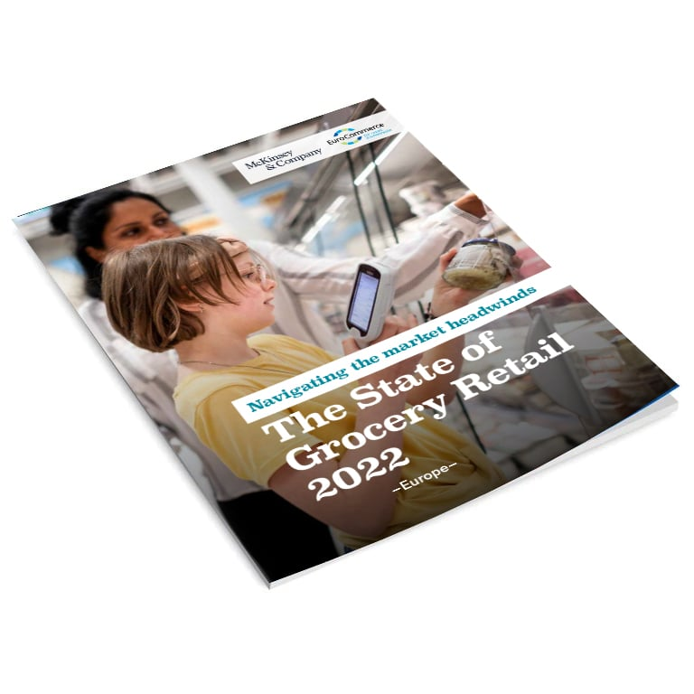
Download 2022 report
Ten emerging trends
Deep dive articles
2022 overview
2022 overview
State of Grocery Europe 2022: Navigating the headwinds
In 2021, the COVID-19 pandemic continued to influence the grocery retail market in Europe. Sales in the last three quarters of 2021 were lower than in the previous year but still significantly higher than in 2019, resulting from the partial closure of food services.
Ten emerging trends
Ten key trends shaping the grocery industry in 2022 and beyond
Deep dive articles
Matthias Wunderlin
Chief Commercial Officer, Migros Supermarkets (CH)
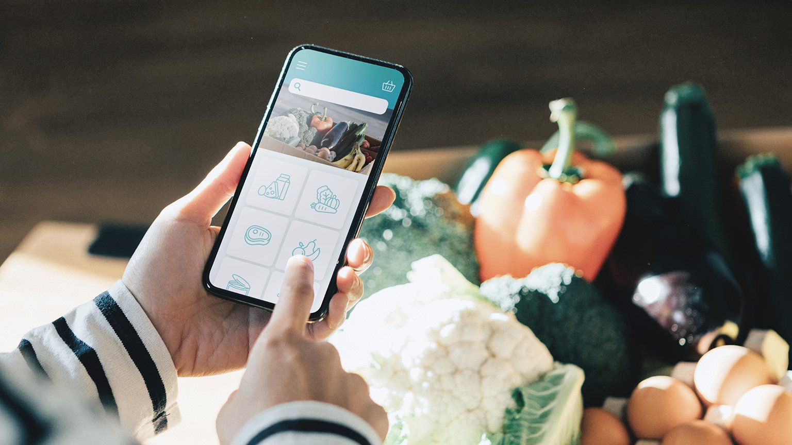
Melanie Smith
CEO, Ocado Retail (UK)
The next S-curve of growth: Online grocery to 2030
Instant grocery: Will it stay or will it go?
Kağan Sümer
CEO, Gorillas
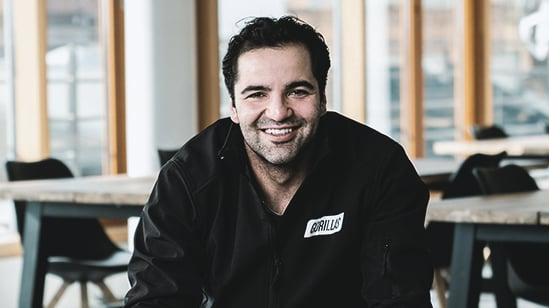
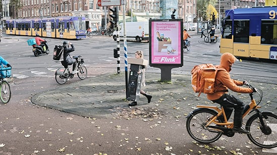
Grocers’ sustainability opportunity in transforming the food system
Marina Caprotti
Executive Chairman, Esselunga (Italy)
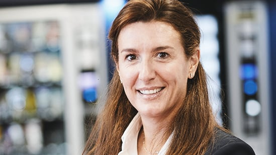
Crisis or opportunity? How grocers can build stronger people models
Cláudia Azevedo
CEO, Sonae
Pushing granular decisions through analytics
Adam Manikowski
Managing Director, Żabka
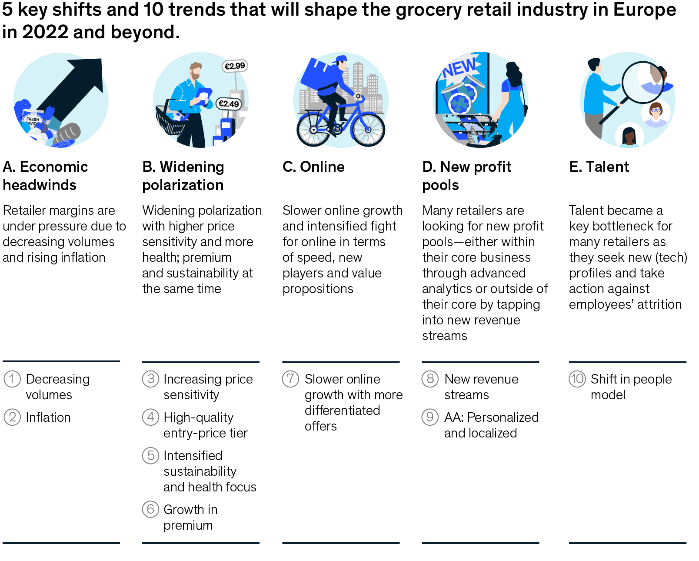
Growing beyond groceries:
The ecosystem expansion
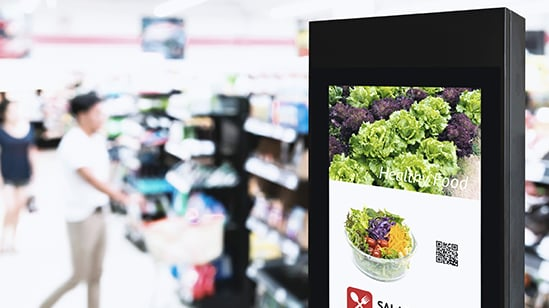
Read the full article
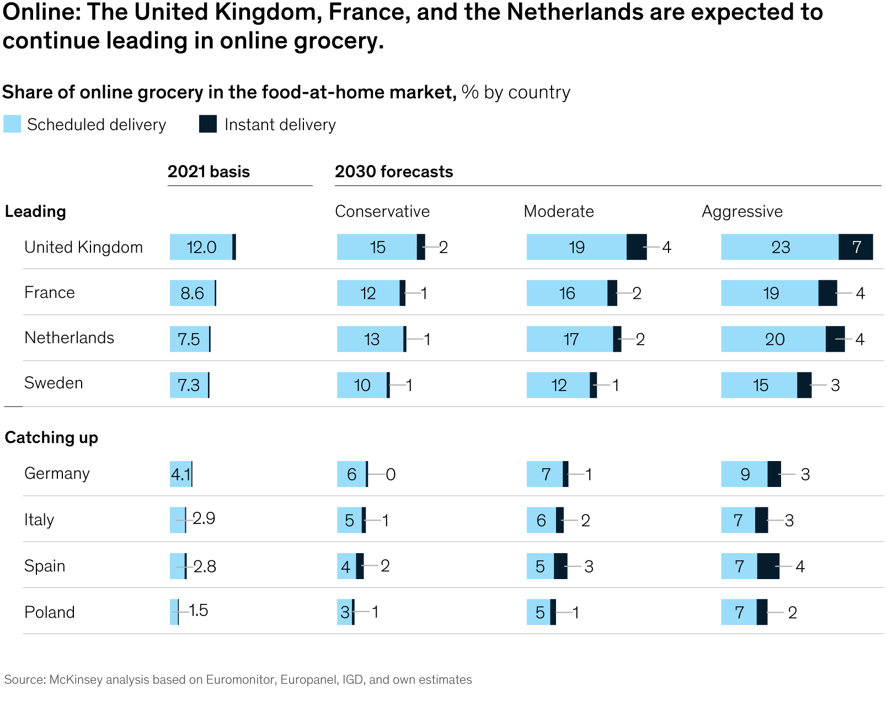
Read the full article

Read the full article
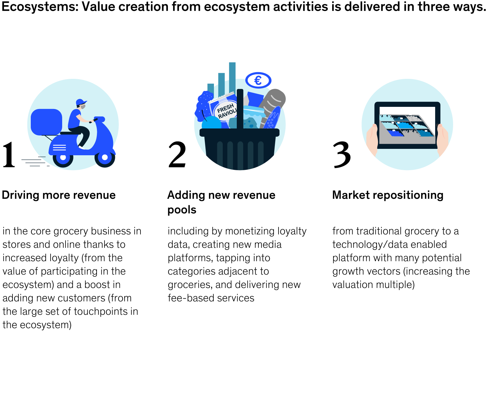
Read the full article
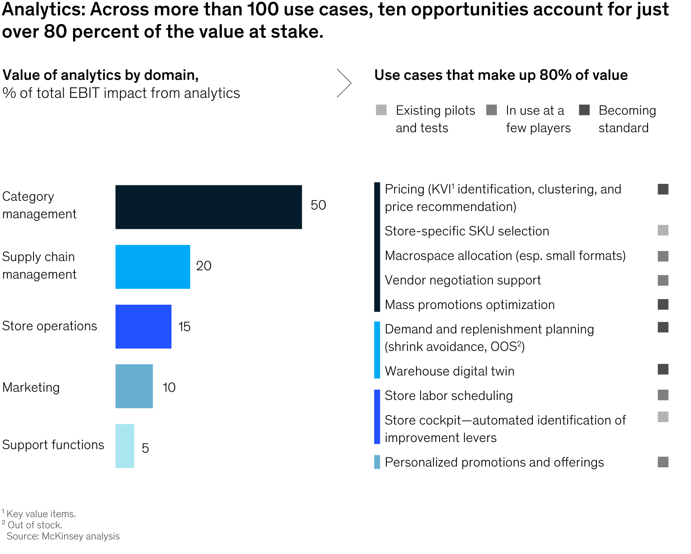
Read the full article
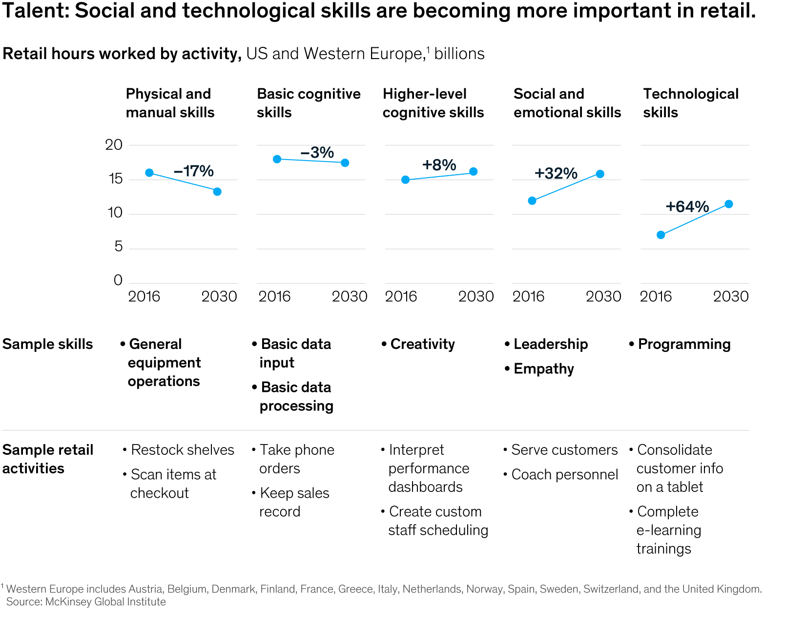
Read the full article
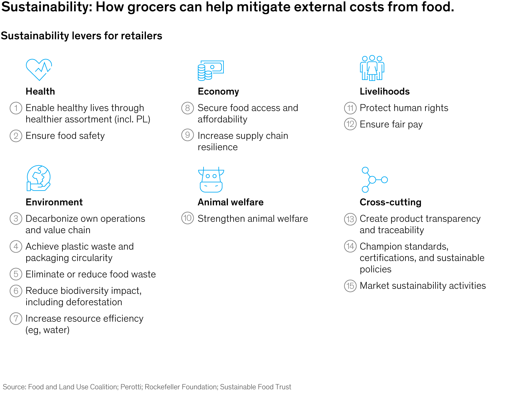
Read the full article
Read more →
Grocers play a central role in our lives, and it leaves them in a unique position to expand beyond their core retail offerings. It can be challenging to build an ecosystem extending into nonfood marketplaces, pharmacy retail, financial services, and other sectors. But the rewards may be worth the effort.
Every facet of grocery retail is becoming more personalized, a trend that is jeopardizing established operating models rooted in a one-to-many mass approach.
Grocery retailers can’t find the people they want for the jobs they need, and some workers are leaving. For an industry driven by people, the challenge is enormous.
Consumers, investors, regulators, and nongovernmental organizations are pressuring companies in the food system to make tangible steps toward sustainability.
Consumers embraced instant delivery during the pandemic because of its convenience, making it one of the fastest-growing segments in grocery.
While stores remain the key channel for most grocers, online grew dramatically during the pandemic, with many retailers quickly adjusting their offerings and operations to meet consumer demand.
Read more →
Read more →
Read more →
Read more →
Read more →
Read more →
Read more →
Read more →
Read more →
Read more →
Read more →
Read more →
Read more →
Migros Supermarkets’ chief commercial officer weighs in on the Grocery retail market and changing consumer preferences.
The CEO of Ocado Retail UK discusses the evolving competitive landscape and what’s ahead for online.
Instant delivery has already made its presence felt. One of the disrupters shares his aspiration and what it will take to get there.
The executive chair of Esselunga Italy discusses the latest initiatives in her organization’s decades-long commitment to sustainability.
Sonae’s CEO discusses why upskilling, reskilling, and a sense of purpose are critical to a high-performing workforce.
Zabka’s managing director discusses the role of analytics in expansion, operational efficiency, and speed.